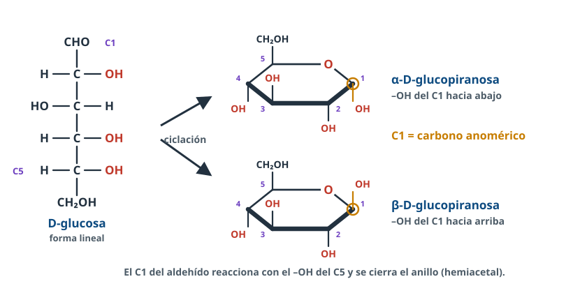
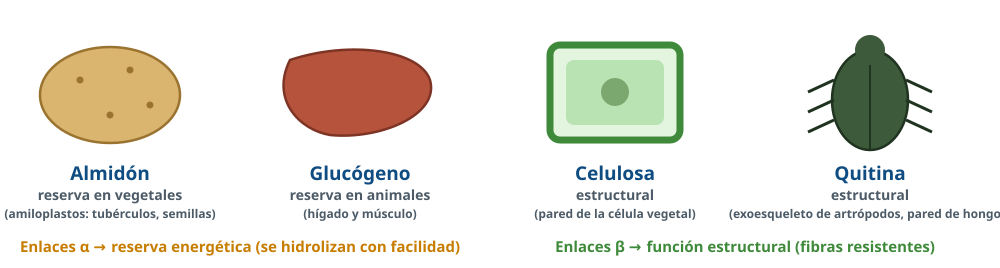
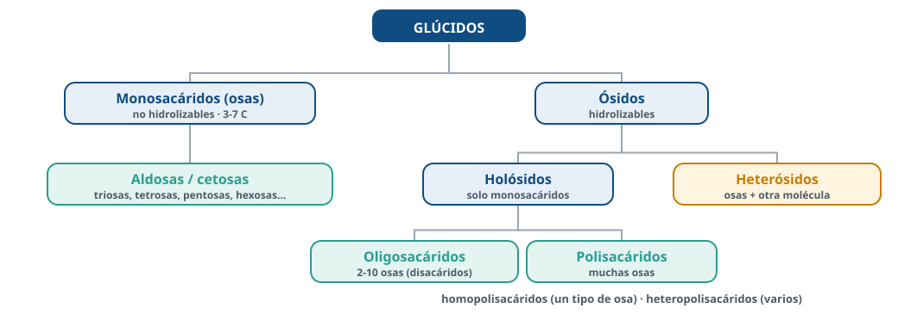
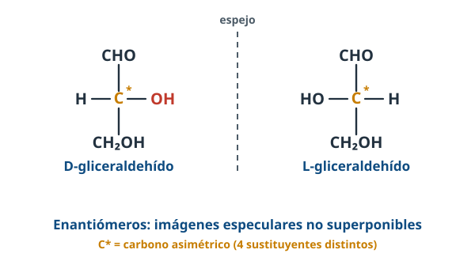
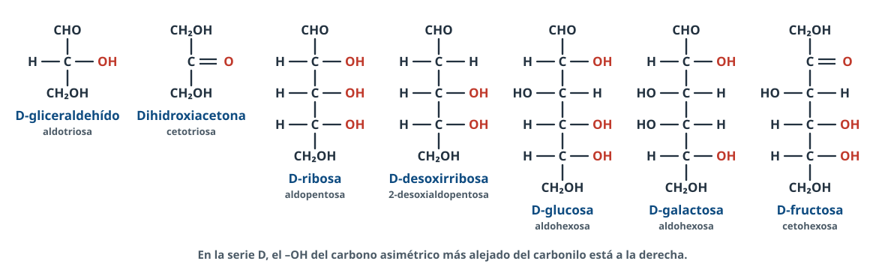
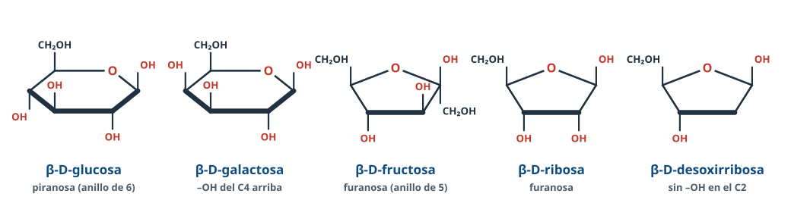
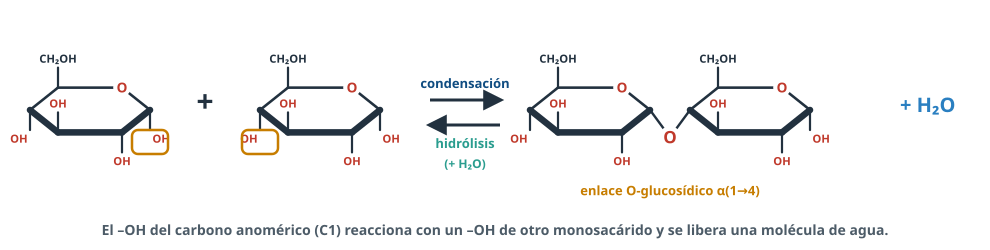
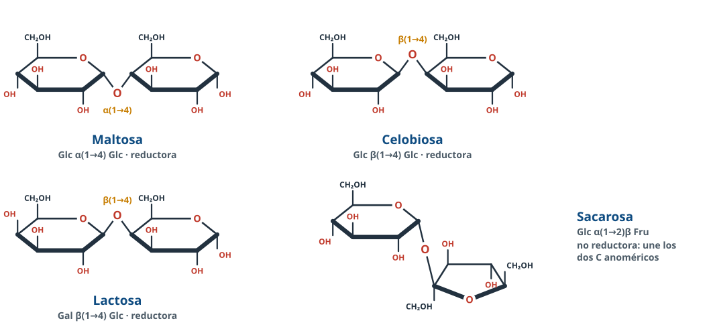
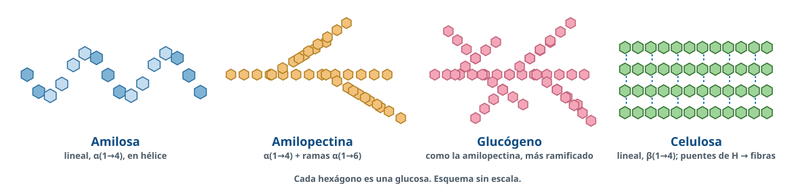
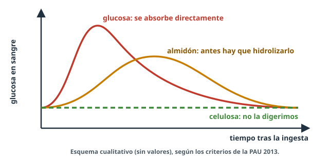

Glúcidos
El combustible de las células y el material de construcción más abundante del planeta… hechos con la misma molécula: la glucosa.
Usa ← → o el espacio para avanzar · F para pantalla completa
Directrices PAU 2026-27 · A.3.1¿Qué tenemos que saber?
Concepto y monosacáridos
Concepto y funciones; clasificación en mono-, di-, oligo- y polisacáridos. Propiedades (sólidos cristalinos, sabor, color, isomería, solubilidad). Carbono asimétrico, enantiómeros, carbono anomérico, α y β. Aldosas y cetosas; triosas, pentosas, hexosas… Fórmulas de Fischer y cíclicas de glucosa, fructosa, galactosa, ribosa y desoxirribosa.Enlace y disacáridos
Enlace O-glucosídico en fórmulas. Maltosa, lactosa, celobiosa y sacarosa: fórmula, tipo de enlace e importancia biológica.Polisacáridos
Almidón (amilosa y amilopectina), glucógeno y celulosa: estructura, función e identificación. Quitina: solo su función. Enlaces α → reserva, β → estructura.Concepto¿Qué son los glúcidos?

Funciones: energética · reserva · estructural · reconocimiento celular (glucocáliz).
ClasificaciónDel monosacárido al polisacárido

MonosacáridosLas piezas de todos los glúcidos
Propiedades
- Sólidos cristalinos blancos, dulces
- Solubles en agua (muchos –OH)
- Poder reductor (carbonilo)
- Isomería y actividad óptica
Clasificación
- Por el carbonilo: aldosas (–CHO, C1) y cetosas (C=O, C2)
- Por el nº de C: triosas, tetrosas, pentosas, hexosas, heptosas
IsomeríaCarbono asimétrico y enantiómeros

- C*: 4 sustituyentes distintos → 2ⁿ estereoisómeros.
- Enantiómeros: imágenes especulares (D y L).
- D: –OH del C* más alejado del carbonilo a la derecha. En los seres vivos, serie D.
- Epímeros: difieren en un C* (glucosa y galactosa, en el C4).
MonosacáridosFórmulas lineales: proyección de Fischer

Formas cíclicasEl anillo y el carbono anomérico
Formas cíclicasPiranosas y furanosas

Fischer → Haworth (serie D)
Lo que está a la derecha en Fischer queda abajo en el anillo.α y β
α: –OH anomérico abajo (contrario al CH₂OH). β: arriba (mismo lado).MonosacáridosLos que tienes que conocer
| Monosacárido | Importancia |
|---|---|
| Gliceraldehído, dihidroxiacetona | Intermediarios del metabolismo (glucólisis) |
| Ribosa · desoxirribosa | Nucleótidos: ARN, ATP · ADN |
| Ribulosa | Fija el CO₂ en la fotosíntesis (ciclo de Calvin) |
| Glucosa | Principal fuente de energía; monómero de almidón, glucógeno y celulosa |
| Fructosa | Frutas y miel; forma la sacarosa; nutriente de los espermatozoides |
| Galactosa | Forma la lactosa de la leche |
Enlace O-glucosídicoAsí se unen los monosacáridos

DisacáridosLos cuatro de las directrices

Disacáridos¿De dónde salen?
| Disacárido | Enlace | Origen |
|---|---|---|
| Maltosa | Glc α(1→4) Glc | Hidrólisis del almidón y el glucógeno; malta |
| Celobiosa | Glc β(1→4) Glc | Hidrólisis de la celulosa (no está libre) |
| Lactosa | Gal β(1→4) Glc | Leche de los mamíferos |
| Sacarosa | Glc α(1→2)β Fru | Caña y remolacha; transporte en la savia elaborada |
Enlace O-glucosídico¿Reductor o no reductor?
Monocarbonílico
C anomérico + C no anomérico (C4…). Queda un C anomérico libre → reductor.Maltosa, lactosa, celobiosa
Dicarbonílico
Une los dos C anoméricos → no reductor.Sacarosa: Glc α(1→2)β Fru
PolisacáridosMuchas glucosas, funciones distintas

No dulces · insolubles o coloidales · sin poder reductor apreciable · alto peso molecular
Polisacáridos de reservaAlmidón y glucógeno (enlaces α)
Almidón · vegetales
- Amilosa: lineal, α(1→4), en hélice
- Amilopectina: α(1→4) + ramas α(1→6)
- Amiloplastos de tubérculos y semillas
Glucógeno · animales
- Como la amilopectina, pero más ramificado
- Hígado: mantiene la glucemia
- Músculo: energía para contraerse
Polisacáridos estructuralesCelulosa (enlaces β)
- β-glucosa, β(1→4), sin ramificar.
- Cadenas rectas en paralelo + puentes de H → microfibrillas y fibras.
- Pared de la célula vegetal: rigidez y resistencia.
- Quitina: exoesqueleto de artrópodos y pared de hongos.
Glúcidos y digestión¿Qué sube antes la glucemia?

Laboratorio · Nuevo 26-27Benedict y Lugol

Benedict → azúcares reductores: azul → rojo ladrillo.
Lugol → almidón: azul-negro.
Solo hay que interpretar resultados (sin fundamento químico).
Laboratorio¿Sabrías explicarlo?
Salud · A.4.2Ni poco ni mucho
Déficit
Hipoglucemia: falla el sistema nervioso (mareos, debilidad, desmayos).Exceso
Se transforma en grasa: obesidad, resistencia a la insulina, diabetes tipo II.Fibra
Celulosa no digerible: tránsito intestinal, saciedad, absorción más lenta.Dieta mediterránea: cereales integrales, legumbres, fruta y verdura; pocos azúcares añadidos.
Antes del examenErrores que restan puntos
- Clasificar monosacáridos sin decir el criterio.
- Decir que la sacarosa es reductora: no lo es (une los dos C anoméricos).
- Confundir D/L con +/−.
- Decir que el almidón lo digieren las bacterias intestinales: lo hidroliza nuestra amilasa.
- Olvidar que en el enlace O-glucosídico se libera agua.
- Confundir celobiosa (β, de la celulosa) con maltosa (α, del almidón).
Del anillo
a la fibra
Repasa el resumen, lee los apuntes completos con las preguntas PAU resueltas y entrénate en BioCelia → Entrenamiento.